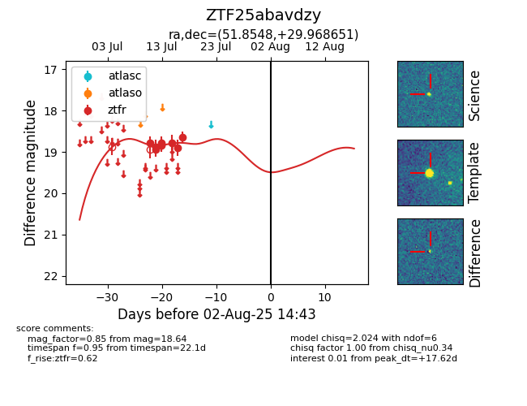

Target ZTF25abavdzy at 2025-08-02 14:43, see:
FINK: fink-portal.org/ZTF25abavdzy
Lasair: lasair-ztf.lsst.ac.uk/objects/ZTF25abavdzy
ALeRCE: alerce.online/object/ZTF25abavdzy
alt names
ZTF25abavdzy (ztf,fink)
coordinates:
equatorial (ra, dec) = (51.8548,+29.96865)
galactic (l, b) = (158.8855,-21.80447)
photometry
last ztfr=18.64
9 ztfr detections
